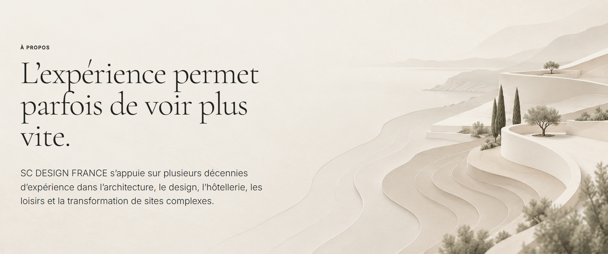

À PROPOS
L’expérience permet parfois de voir plus vite.
SC DESIGN FRANCE s’appuie sur plusieurs décennies d’expérience dans l’architecture, le design, l’hôtellerie, les loisirs et la transformation de sites complexes.
SC DESIGN FRANCE
Une capacité à comprendre avant de produire.
L’expérience n’est pas présentée comme une accumulation de références mais comme une capacité à identifier rapidement les décisions qui auront réellement un impact.
Fabrice IMBROSCIANO — Titulaire du diplôme d’Architecte DPLG · conseil stratégique · AMO · design management.
Sonia CHASSINT — Architecte d’intérieur · design management.
SC DESIGN FRANCE intervient aux côtés des décideurs, exploitants et collectivités.
INTELLIGENCE ARTIFICIELLE & CONCEPTION
Augmenter le regard, pas remplacer le concepteur.
RESPONSABLERS6776
Fabrice Imbrosciano est titulaire de la certification professionnelle RS6776 — Création de contenus rédactionnels et visuels par l’usage responsable de l’intelligence artificielle générative.
Cette compétence complète l’expérience architecturale et stratégique de SC DESIGN FRANCE par une utilisation professionnelle de l’intelligence artificielle générative intégrant méthodologie, confidentialité des données, accessibilité et cadre réglementaire.
Chez SC DESIGN FRANCE, l’IA n’est pas utilisée pour remplacer la conception. Elle permet d’explorer davantage, de confronter plus rapidement différents scénarios, de visualiser des hypothèses et de rendre les décisions plus compréhensibles.
Associée demain à la simulation, aux outils numériques et à la robotique, elle ouvre de nouvelles possibilités pour imaginer des bâtiments et des territoires capables de mieux répondre aux transformations climatiques et aux nouveaux usages.
Vérifier la certification →« Je ne commence pas par dessiner un projet. Je commence par comprendre ce qu’il doit devenir. »
PREMIÈRE ÉTAPE
Commençons par comprendre.
Présentez-nous votre territoire, votre bâtiment ou votre problématique.